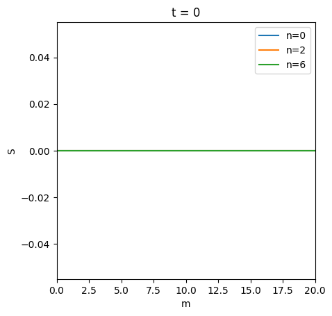
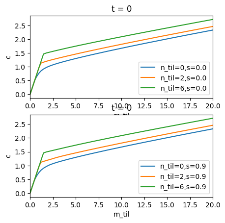
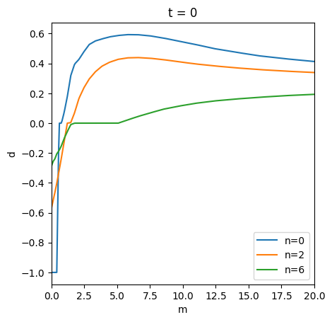
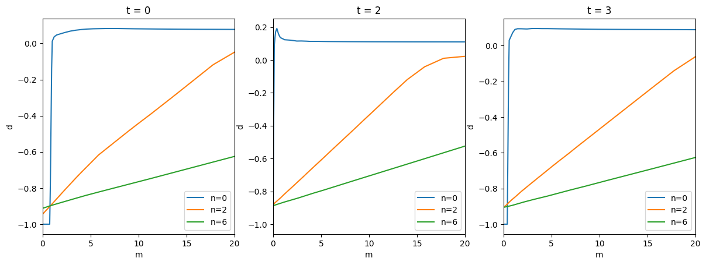
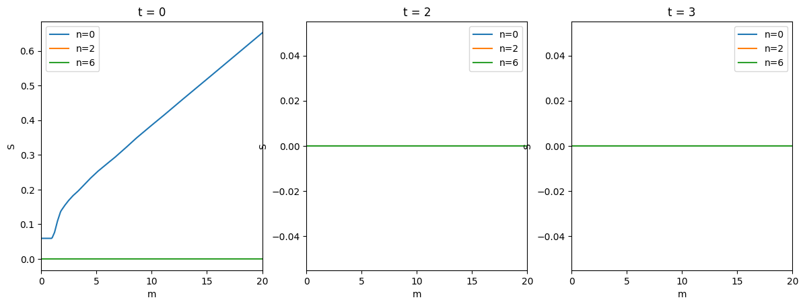
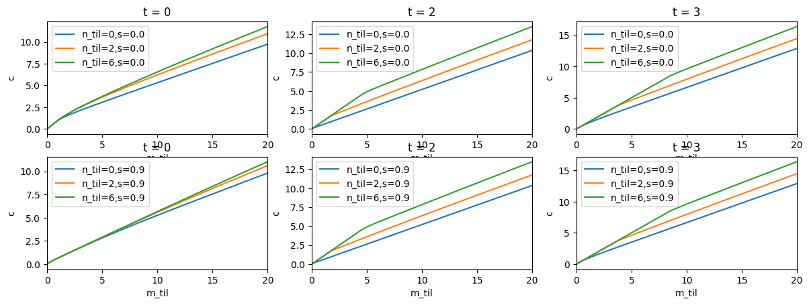

This page was generated from
examples/ConsRiskyContribModel/RiskyContribConsumerType.ipynb.
Interactive online version: .
Download notebook.
.
Download notebook.
Interactive online version:
“Risky Contribution” Model#
This notebook doesn’t actually explain the model yet; sorry!
[1]:
from time import time
import numpy as np
from HARK.ConsumptionSaving.ConsRiskyContribModel import (
RiskyContribConsumerType,
init_risky_contrib,
)
[2]:
def plot_slices_3d(
functions,
bot_x,
top_x,
y_slices,
N=300,
y_name=None,
titles=None,
ax_labs=None,
):
import matplotlib.pyplot as plt
if type(functions) == list:
function_list = functions
else:
function_list = [functions]
nfunc = len(function_list)
# Initialize figure and axes
fig = plt.figure(figsize=plt.figaspect(1.0 / nfunc))
# Create x grid
x = np.linspace(bot_x, top_x, N, endpoint=True)
for k in range(nfunc):
ax = fig.add_subplot(1, nfunc, k + 1)
for y in y_slices:
if y_name is None:
lab = ""
else:
lab = y_name + "=" + str(y)
z = function_list[k](x, np.ones_like(x) * y)
ax.plot(x, z, label=lab)
if ax_labs is not None:
ax.set_xlabel(ax_labs[0])
ax.set_ylabel(ax_labs[1])
# ax.imshow(Z, extent=[bottom[0],top[0],bottom[1],top[1]], origin='lower')
# ax.colorbar();
if titles is not None:
ax.set_title(titles[k])
ax.set_xlim([bot_x, top_x])
if y_name is not None:
ax.legend()
plt.show()
def plot_slices_4d(
functions,
bot_x,
top_x,
y_slices,
w_slices,
N=300,
slice_names=None,
titles=None,
ax_labs=None,
):
import matplotlib.pyplot as plt
if type(functions) == list:
function_list = functions
else:
function_list = [functions]
nfunc = len(function_list)
nws = len(w_slices)
# Initialize figure and axes
fig = plt.figure(figsize=plt.figaspect(1.0 / nfunc))
# Create x grid
x = np.linspace(bot_x, top_x, N, endpoint=True)
for j in range(nws):
w = w_slices[j]
for k in range(nfunc):
ax = fig.add_subplot(nws, nfunc, j * nfunc + k + 1)
for y in y_slices:
if slice_names is None:
lab = ""
else:
lab = (
slice_names[0]
+ "="
+ str(y)
+ ","
+ slice_names[1]
+ "="
+ str(w)
)
z = function_list[k](x, np.ones_like(x) * y, np.ones_like(x) * w)
ax.plot(x, z, label=lab)
if ax_labs is not None:
ax.set_xlabel(ax_labs[0])
ax.set_ylabel(ax_labs[1])
# ax.imshow(Z, extent=[bottom[0],top[0],bottom[1],top[1]], origin='lower')
# ax.colorbar();
if titles is not None:
ax.set_title(titles[k])
ax.set_xlim([bot_x, top_x])
if slice_names is not None:
ax.legend()
plt.show()
[3]:
# Solve an infinite horizon version
# Get initial parameters
par_infinite = init_risky_contrib.copy()
# And make the problem infinite horizon
par_infinite["cycles"] = 0
# and sticky
par_infinite["AdjustPrb"] = [1.0]
# and with a withdrawal tax
par_infinite["WithdrawTax"] = [0.1]
par_infinite["DiscreteShareBool"] = False
par_infinite["vFuncBool"] = False
# Create agent and solve it.
inf_agent = RiskyContribConsumerType(tolerance=1e-3, **par_infinite)
print("Now solving infinite horizon version; this will take a minute.")
t0 = time()
inf_agent.solve(verbose=False)
t1 = time()
print("Converged!")
print("Solving took " + str(t1 - t0) + " seconds.")
# Plot policy functions
periods = [0]
n_slices = [0, 2, 6]
mMax = 20
dfracFunc = [inf_agent.solution[t].stage_sols["Reb"].dfracFunc_Adj for t in periods]
ShareFunc = [inf_agent.solution[t].stage_sols["Sha"].ShareFunc_Adj for t in periods]
cFuncFxd = [inf_agent.solution[t].stage_sols["Cns"].cFunc for t in periods]
# Rebalancing
plot_slices_3d(
dfracFunc,
0,
mMax,
y_slices=n_slices,
y_name="n",
titles=["t = " + str(t) for t in periods],
ax_labs=["m", "d"],
)
# Share
plot_slices_3d(
ShareFunc,
0,
mMax,
y_slices=n_slices,
y_name="n",
titles=["t = " + str(t) for t in periods],
ax_labs=["m", "S"],
)
# Consumption
shares = [0.0, 0.9]
plot_slices_4d(
cFuncFxd,
0,
mMax,
y_slices=n_slices,
w_slices=shares,
slice_names=["n_til", "s"],
titles=["t = " + str(t) for t in periods],
ax_labs=["m_til", "c"],
)
Now solving infinite horizon version; this will take a minute.
Converged!
Solving took 54.27440142631531 seconds.


Finished cycle #37 in 0.23799729347229004 seconds, solution distance = 0.22001247043174033
Finished cycle #38 in 0.24099016189575195 seconds, solution distance = 0.2041307958435148
Finished cycle #39 in 0.24204635620117188 seconds, solution distance = 0.1895511158691363
Finished cycle #40 in 0.24039459228515625 seconds, solution distance = 0.17614114810584525
Finished cycle #41 in 0.24804925918579102 seconds, solution distance = 0.16379223371877671
Finished cycle #42 in 0.23607158660888672 seconds, solution distance = 0.15240148828154432
Finished cycle #43 in 0.24167418479919434 seconds, solution distance = 0.14188487999826904
Finished cycle #44 in 0.24086308479309082 seconds, solution distance = 0.13216482757643888
Finished cycle #45 in 0.2350912094116211 seconds, solution distance = 0.12317119440462676
Finished cycle #46 in 0.23387527465820312 seconds, solution distance = 0.1148412372958667
Finished cycle #47 in 0.245802640914917 seconds, solution distance = 0.1071190115202647
Finished cycle #48 in 0.24527525901794434 seconds, solution distance = 0.09995443417609451
Finished cycle #49 in 0.23836779594421387 seconds, solution distance = 0.09330220644322651
Finished cycle #50 in 0.2500934600830078 seconds, solution distance = 0.08712305238126916
Finished cycle #51 in 0.2407543659210205 seconds, solution distance = 0.08137793451099284
Finished cycle #52 in 0.24480748176574707 seconds, solution distance = 0.07603087196451241
Finished cycle #53 in 0.24602246284484863 seconds, solution distance = 0.07105207269190572
Finished cycle #54 in 0.24190545082092285 seconds, solution distance = 0.06641377226958056
Finished cycle #55 in 0.2417135238647461 seconds, solution distance = 0.06209046840455912
Finished cycle #56 in 0.23904681205749512 seconds, solution distance = 0.05806039214042258
Finished cycle #57 in 0.23853373527526855 seconds, solution distance = 0.0543016349872083
Finished cycle #58 in 0.24446892738342285 seconds, solution distance = 0.050792355429262415
Finished cycle #59 in 0.23846030235290527 seconds, solution distance = 0.04751525941490797
Finished cycle #60 in 0.23834943771362305 seconds, solution distance = 0.044454484600144895
Finished cycle #61 in 0.24232697486877441 seconds, solution distance = 0.04159298664174571
Finished cycle #62 in 0.23842740058898926 seconds, solution distance = 0.0389188115968615
Finished cycle #63 in 0.24158263206481934 seconds, solution distance = 0.03641910755728617
Finished cycle #64 in 0.24176406860351562 seconds, solution distance = 0.03408188475658491
Finished cycle #65 in 0.24629855155944824 seconds, solution distance = 0.03189605043228383
Finished cycle #66 in 0.23747467994689941 seconds, solution distance = 0.029851355475425834
Finished cycle #67 in 0.24113821983337402 seconds, solution distance = 0.027938308926213296
Finished cycle #68 in 0.24250006675720215 seconds, solution distance = 0.02614812496521779
Finished cycle #69 in 0.2368030548095703 seconds, solution distance = 0.024472707091931056
Finished cycle #70 in 0.24219918251037598 seconds, solution distance = 0.022904506785693002
Finished cycle #71 in 0.23986268043518066 seconds, solution distance = 0.021436548979984593
Finished cycle #72 in 0.24063372611999512 seconds, solution distance = 0.02006369692858101
Finished cycle #73 in 0.24188923835754395 seconds, solution distance = 0.01877843821991476
Finished cycle #74 in 0.24191570281982422 seconds, solution distance = 0.01757256485253933
Finished cycle #75 in 0.23726272583007812 seconds, solution distance = 0.016443733161427332
Finished cycle #76 in 0.24784588813781738 seconds, solution distance = 0.015386928487888696
Finished cycle #77 in 0.24249696731567383 seconds, solution distance = 0.014398454963458818
Finished cycle #78 in 0.2388439178466797 seconds, solution distance = 0.013473205667235533
Finished cycle #79 in 0.23897767066955566 seconds, solution distance = 0.012606505619487507
Finished cycle #80 in 0.23634552955627441 seconds, solution distance = 0.011794968634792014
Finished cycle #81 in 0.23593401908874512 seconds, solution distance = 0.011035290447981794
Finished cycle #82 in 0.24188995361328125 seconds, solution distance = 0.010323520782613116
Finished cycle #83 in 0.2406473159790039 seconds, solution distance = 0.009657068564937532
Finished cycle #84 in 0.23662972450256348 seconds, solution distance = 0.009033021861213797
Finished cycle #85 in 0.24515485763549805 seconds, solution distance = 0.008448680465587444
Finished cycle #86 in 0.24194121360778809 seconds, solution distance = 0.007901529967000442
Finished cycle #87 in 0.24025249481201172 seconds, solution distance = 0.007389222628706449
Finished cycle #88 in 0.23914432525634766 seconds, solution distance = 0.0069095629369329
Finished cycle #89 in 0.2426466941833496 seconds, solution distance = 0.006460495805733046
Finished cycle #90 in 0.23419928550720215 seconds, solution distance = 0.00604009682174933
Finished cycle #91 in 0.24608159065246582 seconds, solution distance = 0.005646562955103462
Finished cycle #92 in 0.2363889217376709 seconds, solution distance = 0.00527820455410577
Finished cycle #93 in 0.23595285415649414 seconds, solution distance = 0.004933437991201828
Finished cycle #94 in 0.24736976623535156 seconds, solution distance = 0.004610778604646981
Finished cycle #95 in 0.2406766414642334 seconds, solution distance = 0.004308834859578781
Finished cycle #96 in 0.2429969310760498 seconds, solution distance = 0.004026302266076698
Finished cycle #97 in 0.2385423183441162 seconds, solution distance = 0.003761957277351513
Finished cycle #98 in 0.23572444915771484 seconds, solution distance = 0.0035146519986142266
Finished cycle #99 in 0.23773670196533203 seconds, solution distance = 0.0032833094678750285
Finished cycle #100 in 0.24480390548706055 seconds, solution distance = 0.0030669193503207737
Finished cycle #101 in 0.23711705207824707 seconds, solution distance = 0.0028645339391815128
Finished cycle #102 in 0.23744726181030273 seconds, solution distance = 0.0026752644036172057
Finished cycle #103 in 0.23840546607971191 seconds, solution distance = 0.0024982772444062107
Finished cycle #104 in 0.23538708686828613 seconds, solution distance = 0.0023328323511329074
Finished cycle #105 in 0.23458385467529297 seconds, solution distance = 0.002178333119072562
Finished cycle #106 in 0.23614239692687988 seconds, solution distance = 0.002033848779593228
Finished cycle #107 in 0.2383708953857422 seconds, solution distance = 0.0018987560781837942
Finished cycle #108 in 0.23924636840820312 seconds, solution distance = 0.001772464733409862
Finished cycle #109 in 0.24867653846740723 seconds, solution distance = 0.0016544173642891735
Finished cycle #110 in 0.23617959022521973 seconds, solution distance = 0.0015440893104674558
Finished cycle #111 in 0.23368191719055176 seconds, solution distance = 0.001440987570251906
Finished cycle #112 in 0.24388575553894043 seconds, solution distance = 0.0013446493424176253
Finished cycle #113 in 0.24480247497558594 seconds, solution distance = 0.001254640439277921
Finished cycle #114 in 0.23627519607543945 seconds, solution distance = 0.0011705536868369393
Finished cycle #115 in 0.23915648460388184 seconds, solution distance = 0.0010920073625086957
Finished cycle #116 in 0.24079298973083496 seconds, solution distance = 0.0010186436927313025
Finished cycle #117 in 0.23693060874938965 seconds, solution distance = 0.0009501274203458365
Converged!
Solving took 27.963370084762573 seconds.

[4]:
# Solve a short, finite horizon version
par_finite = init_risky_contrib.copy()
# Four period model
par_finite["PermGroFac"] = [2.0, 1.0, 0.1, 1.0]
par_finite["PermShkStd"] = [0.1, 0.1, 0.0, 0.0]
par_finite["TranShkStd"] = [0.2, 0.2, 0.0, 0.0]
par_finite["AdjustPrb"] = [0.5, 0.5, 1.0, 1.0]
par_finite["WithdrawTax"] = [0.1, 0.1, 0.0, 0.0]
par_finite["LivPrb"] = [1.0, 1.0, 1.0, 1.0]
par_finite["T_cycle"] = 4
par_finite["T_retire"] = 0
par_finite["T_age"] = 4
# Adjust discounting and returns distribution so that they make sense in a
# 4-period model
par_finite["DiscFac"] = 0.95**15
par_finite["Rfree"] = 4 * [1.03**15]
par_finite["RiskyAvg"] = 1.08**15 # Average return of the risky asset
par_finite["RiskyStd"] = 0.20 * np.sqrt(15) # Standard deviation of (log) risky returns
# Create and solve
contrib_agent = RiskyContribConsumerType(**par_finite)
print("Now solving")
t0 = time()
contrib_agent.solve()
t1 = time()
print("Solving took " + str(t1 - t0) + " seconds.")
# Plot Policy functions
periods = [0, 2, 3]
dfracFunc = [contrib_agent.solution[t].stage_sols["Reb"].dfracFunc_Adj for t in periods]
ShareFunc = [contrib_agent.solution[t].stage_sols["Sha"].ShareFunc_Adj for t in periods]
cFuncFxd = [contrib_agent.solution[t].stage_sols["Cns"].cFunc for t in periods]
# Rebalancing
plot_slices_3d(
dfracFunc,
0,
mMax,
y_slices=n_slices,
y_name="n",
titles=["t = " + str(t) for t in periods],
ax_labs=["m", "d"],
)
# Share
plot_slices_3d(
ShareFunc,
0,
mMax,
y_slices=n_slices,
y_name="n",
titles=["t = " + str(t) for t in periods],
ax_labs=["m", "S"],
)
# Consumption
plot_slices_4d(
cFuncFxd,
0,
mMax,
y_slices=n_slices,
w_slices=shares,
slice_names=["n_til", "s"],
titles=["t = " + str(t) for t in periods],
ax_labs=["m_til", "c"],
)
Now solving
Solving took 2.3705382347106934 seconds.



[5]:
contrib_agent.track_vars = [
"pLvl",
"t_age",
"Adjust",
"mNrm",
"nNrm",
"mNrmTilde",
"nNrmTilde",
"aNrm",
"cNrm",
"Share",
"dfrac",
]
contrib_agent.T_sim = 4
contrib_agent.AgentCount = 10
contrib_agent.initialize_sim()
contrib_agent.simulate()
[6]:
import pandas as pd
df = contrib_agent.history
# Add an id to the simulation results
agent_id = np.arange(contrib_agent.AgentCount)
df["id"] = np.tile(agent_id, (contrib_agent.T_sim, 1))
# Flatten variables
df = {k: v.flatten(order="F") for k, v in df.items()}
# Make dataframe
df = pd.DataFrame(df)
[ ]: